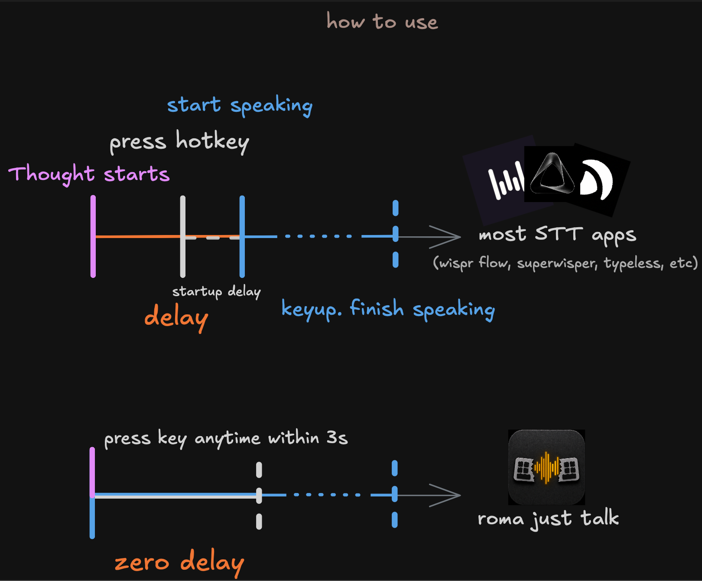

static sandbox
Three landing directions. No production dependency.
Compare hero, button, and color language before touching the live page. Each direction keeps the same core product promise.
Direction A
Say first. Press later.
Roma keeps a short buffer, so the first words arrive with the rest of the thought.
Direction B
No wait. Just speak.
Start talking while your hand moves. Roma catches the beginning.

Direction C
Thought before hotkey.
A short rolling buffer turns dictation from a sequence into a parallel action.